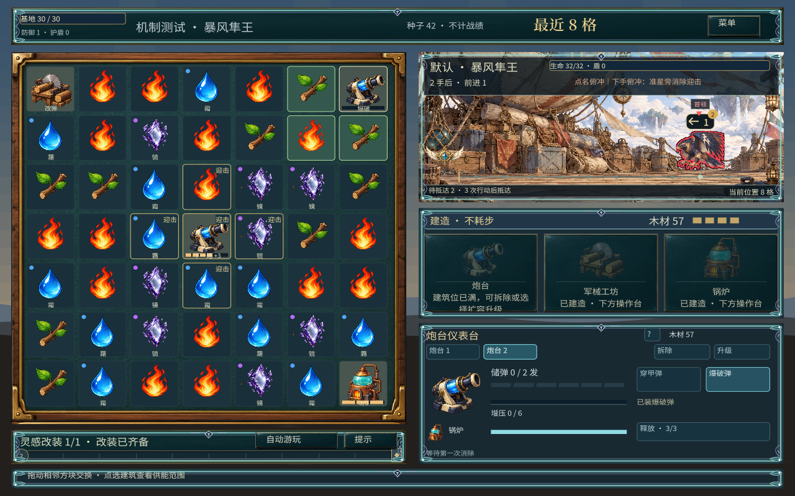

消除工坊 / 操作
看清下一步，再消除
普通战斗随有效行动推进。先看敌人意图，再决定这一手用来输出、控制，还是蓄力。
连锁完整结算
一次交换带起的连消，都算在这一手里。
布置不抢行动
建造、升级、改集火不额外耗一手，先安排好再出招。

左侧寻找连消，右上判断敌人下一次行动。玩法与操作展开规则、操作与数值
操作
- 交换
- 拖相邻棋子。横竖同色至少三连才消。无效交换不推进。
- 建筑
- 点建筑，看范围和状态。
- 目标
- 点怪物。同格多只用头顶头像切。
- 取消布置
- 再点同一工具、右键或 Esc。
- 详情
- 操作台标题旁的「？」。
一次有效交换之后
- 消除，按颜色和特质结算，再处理掉落和连锁。
- 结算职业：炮台射击、魔像培养。已武装机关在敌人经过时触发。
- 敌人执行已显示的意图。本手结束才入场的增援，下一手才动。
- 清波发奖。有整备和选卡时，选完再进下一波。
什么会推进战斗
- 不耗一手
- 建造、升级、改集火、机关布置与附魔、转换器开关、魔像提前放出。
- 耗一手
- 有效交换。炮术师主动引爆锅炉。
- 实时例外
- 深渊首领按时间走和攻击。菜单、结算、升级时暂停。小怪和增援仍按行动。
改了什么
早期
消除给经验，满了弹三选一，成长插在战斗中间。
远征修订
成长改成木材、波间整备和选卡。连锁不再推进增援。
职业修订
删掉护幕放电。机关从拖拽改成点击连放。魔像可提前放出。
迭代记录 ↗